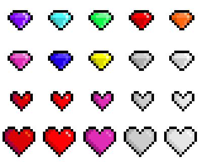
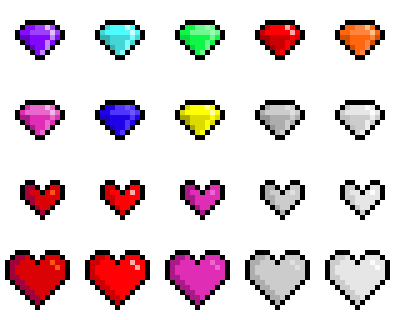
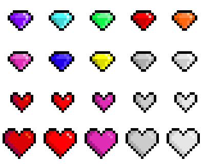

Пускай есть машина, которая получает \(a\) на вход и выдает \(b\). Скучно. Пускай теперь есть много машин (ну или разные состояния одной) и известно в какой момент времени какая машина работает (в каком состоянии находится машина), причем, что очень важно, состояние в следующий момент времени определяется состоянием в текущий и (возможно) входом \(a\) (слайдер отвечает за время).
Определение: (Конечный абстрактный
детерминированный) автомат – это \((A, Q,
B, \varphi, \psi)\), где
\(A\) – алфавит(множество)
входов.
\(Q\) –
алфавит(множество) состояний.
\(B\) – алфавит(множество)
выходов.
Множества \(A, Q,
B\) – конечны.
\(\varphi:
Q\times A \to Q\) – функция переходов.
\(\psi: Q \times A \to B\) – функция
выходов.
Определение: Пусть \((A, Q, B, \varphi, \psi)\) – автомат. Если \(\varphi\) зависит от \(a \in A\) фиктивно, то \((A, Q, B, \varphi, \psi)\) – автомат Мура.
Определение: Пусть \((A, Q, B, \varphi, \psi)\) – автомат. Если \(A = A_1 \times \ldots \times A_m\), то \((A, Q, B, \varphi, \psi)\) имеет \(m\) входов.
Определение: Пусть \((A, Q, B, \varphi, \psi)\) – автомат. Если \(B = B_1 \times \ldots \times B_m\), то \((A, Q, B, \varphi, \psi)\) имеет \(m\) выходов.
Определение: Пусть \((A, Q, B, \varphi, \psi)\) – автомат.
Слова в алфавите \(A\) – входные слова.
Слова в алфавите \(B\) – выходные слова.
Пусть \(\alpha\) – слово. \(A\) – алфавит.
Обозначения:
\(|\alpha|\) – длина слова.
\([\alpha]_l\) – первые \(l\) букв слова \(\alpha\).
\(\Lambda\) – пустое слово.
\(A^{*}\) – множество всех слов в алфавите \(A\).
\(\alpha^k\) – это слово, составленное из записанного \(k\) раз слова \(\alpha\).
Пусть \((A, Q, B, \varphi, \psi)\) – автомат. \(q \in Q\), \(a \in A\), \(\alpha\) – слово в алфавите \(A\). Доопределим функции \(\varphi\) и \(\psi\), так чтобы они могли принимать на вход целые слова.
\(\begin{array}{c} \varphi(q, \Lambda) = q\\ \varphi(q, \alpha a) = \varphi(\varphi(q, \alpha), a) \end{array}\)
\(\psi(q, \alpha a) = \psi(\varphi(q, \alpha), a)\) (Только непустое входное слово, так как для выхода нужен вход)
Утверждение:
\[\varphi(q, \alpha_1 \alpha_2) =
\varphi(\varphi(q, \alpha_1), \alpha_2)\] \[\psi(q, \alpha_1 \alpha_2) = \psi(\varphi(q,
\alpha_1), \alpha_2)\]
Доказательство: индукция \(\,\,\,\,\blacksquare\)
Определение: Пусть \((A, Q, B, \varphi, \psi)\) – автомат. \(q \in Q\), \(\alpha\) – слово в алфавите \(A\).
\(\overline{\varphi}(q, \alpha) = \varphi(q, [\alpha]_0)\varphi(q, [\alpha]_1)\ldots \varphi(q, \alpha)\) – слово состояний.
\(\overline{\psi}(q, \alpha) = \psi(q, [\alpha]_0)\psi(q, [\alpha]_1)\ldots \psi(q, \alpha)\) – слово выходов.
Определение: Пусть \((A, Q, B, \varphi, \psi)\) – автомат. Зафиксируем \(q_1 \in Q\). Тогда \(\psi: A^{*} \to B^{*}\). \(V_{q_1} = (A, Q, B, \varphi, \psi, q_1)\) – инициальный конечный автомат.
Отображение \(f(\alpha) = \overline{\psi}(q_1, \alpha)\) – ограниченно-детерминированная функция.
Определение: Пусть \(V_{q_1} = (A, Q, B, \varphi, \psi, q_1)\) – инициальный атомат. \(\alpha\) – слово в алфавите \(A\).
\(\mathcal{Q} = \overline{\varphi}(q_1, \alpha)\) – слово состояний.
\(\beta = \overline{\psi}(q_1, \alpha)\) – слово выходов.
\(\begin{cases} \mathcal{Q}(1) = q_1\\ \mathcal{Q}(t + 1) = \varphi(\mathcal{Q}(t), \alpha(t))\\ \beta(t) = \psi(\mathcal{Q}(t), \alpha(t)) \end{cases}\) – канонические уравнения инициального автомата.
Утверждение:
\[\overline{\psi}(q, \alpha_1 \alpha_2) = \overline{\psi}(q, \alpha_1)\overline{\psi}(\varphi(q, \alpha_1), \alpha_2)\]
Доказательство: индукция \(\,\,\,\,\blacksquare\)
Пусть \(A = \underbrace{E_2 \times \ldots \times E_2}_{m}\),
\(Q = \underbrace{E_2 \times \ldots \times E_2}_{n}\),
\(B = \underbrace{E_2 \times \ldots \times E_2}_{p}\).
Пусть \(\alpha\) – слово в \(A\). Тогда \(\alpha\) можно записать, как \(\alpha(t) = (a_1(t), \ldots, a_m(t))\).
\(\mathcal{Q}(t) = (q_1(t), \ldots, q_n(t))\).
\(\beta(t) = (b_1(t), \ldots, b_p(t))\).
\(q_1 = (q_{11}, \ldots, q_{1n})\).
Запишем канонические уравнения:
\[\begin{cases} q_i(1) = q_{1i}\\ q_i(t + 1) = \varphi_i(q_1(t), \ldots, q_n(t), a_1(t), \ldots, a_m(t))\\ b_j(t) = \psi_j(q_1(t), \ldots, q_n(t), a_1(t), \ldots, a_m(t)) \end{cases}\]
Определение: Пусть \(A\) – алфавит. Пусть дано отображение \(\alpha: \mathbb{N} \to A\). \(\alpha(1)\alpha(3)\ldots\) – бесконечное слово.
Множество всех бесконечных слов обозначается \(A^{\infty}\).
Пусть \(V_q = (A, Q, B, \varphi, \psi, q)\) – инициальный автомат. \(\alpha\) – бесконечное слово в \(A\).
\(\beta = \overline{\psi}(q, \alpha): \mathbb{N} \to B\)
\(\beta(i) = \psi(q, \alpha(1)\ldots \alpha(i))\).
Определение: Пусть \(\alpha(1)\alpha(3)\ldots\) – бесконечное слово. Если существуют \(\tau, \tau’ \in \mathbb{N}\), такие, что \(\alpha(i + \tau) = \alpha(i) \,\,\,\, \forall i > \tau’ + 1\), то \(\tau\) – период \(\alpha\), \(\tau’\) – предпериод.
Теорема: Конечный инициальный автомат, имеющий \(n\) состояний, преобразует последовательность (бесконечное слово) \(\alpha\) с наименьшим периодом \(\tau\) в последовательность \(\beta\) с наименьшим периодом вида \(\theta \cdot m\), где \(\theta \,\,|\,\, \tau\) и \(m \in \{1, \ldots, n\}\). Если \(|A| \ge 3\) и \(|B| \ge 2\), то каждое такое значение периода достигается при нектором автомате \(V_q\) и некторой последовательности \(\alpha\).
Доказательство:
Пусть \(\alpha_1 = \alpha(1)\ldots \alpha(\tau’)\) и \(\alpha_2 = \alpha(\tau’ + 1)\ldots \alpha(\tau’ + \tau)\). Тогда \(\alpha = \alpha_1 \alpha_2 \alpha_2 \ldots\)
У автомата \(n\) состояний, следовательно в последовательности \(\varphi(q_1, \alpha_1 \alpha_2), \ldots, \varphi(q_1, \alpha_1 \alpha_2^{n + 1})\) существуют одинаковые состояния. Пусть \(\varphi(q_1, \alpha_1 \alpha_2^{i_1}) = \varphi(q_1, \alpha_1 \alpha_2^{i_2}) = q, \,\,\,\, i_1 < i_2\). Далее возьмем \(\alpha_3 = \alpha_2^{i_2 - i_1}\). \(q = \varphi(q_1, \alpha_1 \alpha_2^{i_1}) = \varphi(q_1, \alpha_1 \alpha_2^{i_1} \alpha_3) = \varphi(\varphi(q_1, \alpha_1 \alpha_2^{i_1}), \alpha_3) = \varphi(q, \alpha_3)\).
\(\alpha = \alpha_1 \alpha_2^{i_1} \alpha_3 \alpha_3 \ldots\)
\[\beta = \overline{\psi}(q_1, \alpha) = \overline{\psi}(q_1, \alpha_1 \alpha_3 \alpha_3 \ldots) = \overline{\psi}(q_1, \alpha_1\alpha_2^{i_1})\overline{\psi}(\varphi(q_1, \alpha_1\alpha_2^{i_1}), \alpha_3 \alpha_3 \ldots)=\] \[= \overline{\psi}(q_1, \alpha_1\alpha_2^{i_1})\overline{\psi}(q, \alpha_3 \alpha_3 \ldots) = \overline{\psi}(q_1, \alpha_1\alpha_2^{i_1})\overline{\psi}(q, \alpha_3)\overline{\psi}(\varphi(q, \alpha_3), \alpha_3 \alpha_3 \ldots)=\]
Получаем, что \(\overline{\psi}(q_1, \alpha)\) периодическая последовательность с длиной периода \(|\alpha_3| = (i_2 - i_1)\cdot \tau\), то есть минимальный период \(\beta\) равен \(\theta \cdot m\), где \(\theta \,\,|\,\, \tau\) и \(m \in \{1, \ldots, n\}\).
Определение: Пусть \(V =
(A, Q, B, \varphi, \psi)\) и \(V’ = (A,
Q’, B, \varphi’, \psi’)\) – конечные автоматы, \(q \in Q\), \(q’
\in Q’\). Если \(\forall \alpha \in
A^{*} \,\,\,\, \overline{\psi}(q, \alpha) = \overline{\psi’}(q’,
\alpha)\), то состояния \(q\) и
\(q’\) неотличимы друг от
друга.
Если \(\exists \alpha \in A^{*}:
\,\,\,\, \overline{\psi}(q, \alpha) \ne \overline{\psi’}(q’,
\alpha)\), то состояния \(q\) и
\(q’\) отличимы друг от друга
словом \(\alpha\).
Определение: Если любые два состояния автомата отличимы, то автомат приведенного типа.
Определение: Пусть \(V = (A, Q, B, \varphi, \psi)\) и \(V’ = (A, Q’, B, \varphi’, \psi’)\) – конечные автоматы. Если \(\forall q \in Q \,\,\,\, \exists q’ \in Q’\), такое, что \(q\) неотличимо от \(q’\) и \(\forall q’ \in Q’ \,\,\,\, \exists q \in Q\), такое, что \(q\) неотличимо от \(q’\), то автоматы \(V\) и \(V’\) неотличимы.
Определение: Пусть \(V = (A, Q, B, \varphi, \psi)\) и \(V’ = (A, Q’, B, \varphi’, \psi’)\) – конечные автоматы. Если существует биективное отображение \(\xi: Q \to Q’\), такое, что \(\forall a \in A, q \in Q\) \[\xi(\varphi(q, a)) = \varphi’(\xi(q), a)\] \[\psi(q, a) = \psi’(\xi(q), a),\] то автоматы \(V\) и \(V’\) изоморфны.
Теорема: У любого конечного автомата \(V\) существует единственный с точностью до изоморфизма автомат приведенного типа неотличимый от \(V\).
Доказательство:
Разбиваем \(Q\) на \(Q_1, \ldots, Q_n\) попарно неотличимых состояний. Доказываем, что для \(q, q’ \in Q_j \,\,\,\, \varphi(q, a) = \varphi(q’, a) \Rightarrow Q_j = \varphi(Q_i, a)\), следовательно получили отображение \(\varphi’: \{Q_1, \ldots, Q_n\}\times A \to \{Q_1, \ldots, Q_n\}\).
\(b = \psi(Q_i, a)\), следовательно получили отображение \(\psi’: \{Q_1, \ldots, Q_n\}\times A \to B\).
Далее проверяем, что автомат \((A, \{Q_1, \ldots, Q_n\}, B, \varphi ’, \psi’)\) неотличим от \(V\) и приведенный.
Единственность с точностью до изоморфизма. Доказываем, что количество состояний \(V\) и \(V’\) одинаковы, и говорим, что \(\xi: q_i \mapsto q_i’\) \(\,\,\,\,\blacksquare\)
Теорема: (Мур #1) Если два состояния автомата \(V = (A, Q, B, \varphi, \psi)\) отличимы, то существует отличающее их слово длины \(|Q| - 1\) и эта оценка неулучшаема.
Доказательство: Рассмотрим отношение эквивалентности \(\rho_k\) на \(Q\). \(q_1 \rho_k q_2 \Leftrightarrow \forall \alpha \in A^{*}: \,\,\,\, |\alpha| = k \,\,\,\, \varphi(q_1, \alpha) = \varphi(q_2, \alpha)\).
\(Q\) разбивается на классы эквивалентности \(R_1, \ldots, R_n\).
Докажем, что в \(R_1\) не менее двух состояний. Пусть \(q\) и \(q’\) неотличимые состояния автомата \(V\), то есть существует непустое слово (возьмем такое слово минимальной длины) \(\alpha’ a, \,\,\,\, \alpha ’ \in A^{*}, \,\,\,\,a \in A\), которое отличает \(q\) и \(q’\). Так как длина наименьшая слово \(\alpha’ a\) отличает \(q\) и \(q’\) последней буквой, то есть \(\varphi(\varphi(q, \alpha’), a) = \varphi(q, \alpha’ a) \ne \varphi(q’, \alpha’ a) = \varphi(\varphi(q’, \alpha’), a)\). По индукции доказывается, что \(|R_i| \le i + 1\).
Очевидно, что \(R_k \subset R_{k + 1} \,\,\,\, \forall k\), но, так как состояний конечное количество, в какой-то момент \(R_k = R_{k + 1} = \ldots = R\)
Получаем, что \(|Q| \ge |R_k| \ge k + 1 \Rightarrow k \le |Q| - 1 \,\,\,\,\blacksquare\)
Пример, показывающий неулучшаемость оценки…
Определение: Пусть \(V = (A, Q, B , \varphi, \psi, q)\) – инициальный конечный автомат. Любое подмножество \(A^{*} \setminus \Lambda\) – событие.
Определение: Пусть \(V = (A, Q, B , \varphi, \psi, q)\) – инициальный конечный автомат, \(B’ \subset B\). Множество \(M = \{\alpha \in A^{*} \setminus \Lambda: \,\,\,\,\psi(q, \alpha) \in B’\}\) – событие, представимое автоматом \(V\) посредством \(B’\).
Определение: Пусть \(M_1\) и \(M_2\) события. Множество \(M_1\cdot M_2 = \{\alpha_1 \alpha_2: \,\,\,\, \alpha_1 \in M_1, \alpha_2 \in M_2\}\) – произведение событий \(M_1\) и \(M_2\).
Определение: Пусть \(M\) – событие. Множество \(<M> = \{\alpha_1\ldots \alpha_k: \,\,\,\, \alpha_i \in M\}\) – итерация события \(M\).
Утверждение: Пусть \(M\) – событие. Тогда
Доказательство: \(\,\,\,\,\blacksquare\)
Утверждение: Пусть \(X, C, D\) – события. Тогда \(X = XC \cup D \,\,\,\, \Leftrightarrow \,\,\,\, X = D <C> \cup D\).
Доказательство: \(\not\subset\)
Определение:
1. События \(\varnothing\) и \(a \in A\) – регулярные.
2. Если
\(R_1\) и \(R_2\) регулярные события, то \(R_1 \cdot R_2\), \(R_1 \cup R_2\) и \(<R_1>\) – регулярные
события.
Утверждение: Пусть \(R_{ij}, \,\,\,\, i \in \{0, \ldots, n\}, \,\,\,\, j \in \{1, \ldots, n\}\) и \(X_1, \ldots, X_n\) удовлетворяют системе уравнений: \[X_1 = X_1 \cdot R_{11} \cup \ldots \cup X_n \cdot R_{n1} \cup R_{01}\] \[X_2 = X_1 \cdot R_{12} \cup \ldots \cup X_n \cdot R_{n2} \cup R_{02}\] \[\vdots\] \[X_n = X_1 \cdot R_{1n} \cup \ldots \cup X_n \cdot R_{nn} \cup R_{0n}\] Тогда \(X_1, \ldots, X_n\) – регулярные события.
Доказательство: Индукция по \(n\).
База: \(n = 1 \Rightarrow X_1 = X_1 \cdot R_{11}\cup R_{01}\) следует из утверждения \(\,\,\,\,\blacksquare\)
Шаг: ну, пооочти очев \(\,\,\,\,\blacksquare\)
Утверждение: События представимые в инициальном конечном автомате – регулярные.
Доказательство:
Пусть \(V = (A, Q, B, \varphi, \psi, q_1)\), \(Q = \{q_1, \ldots, q_n\}\), \(M\) – событие, представимое посредством \(B’\).
\[M_i = \{\alpha \in A^{*}\setminus \Lambda: \,\,\,\, \varphi(q_1, \alpha) = q_i\}\]
\[M_i’ = \{a \in A^{*} (|a| = 1): \,\,\,\, \psi(q_i, a) \in B’\}\]
\[\Downarrow\]
\[M = M_1 M_1’ \cup \ldots \cup M_n M_n’\]
\(M_i’\) – регулярно.
\[R_{ij} = \{a \in A^{*} (|a| = 1): \,\,\,\, \varphi(q_i, a) = q_j\}, \,\,\,\, i, j \in \{1, \ldots, n\}\]
\(R_{ij}\) – регулярно.
\[M_1 = M_1 R_{11} \cup \ldots \cup M_n R_{n1} \cup R_{11}\] \[\vdots\] \[M_n = M_n R_{1n} \cup \ldots \cup M_n R_{nn} \cup R_{1n}\]
\[\Downarrow\]
\(M_i\) – регулярно \(\,\,\,\,\blacksquare\)
Определение: Пусть \(A\) – алфавит. Обобщенный источник (в алфавите) \(A\) – это конечный ориентированный граф, каждому ребру которого сопоставлен символ \(a \in A\) или пустое слово \(\Lambda\), и в котором выбраны начальная вершина \(v\) и финальная вершина \(w\).
Определение: Пусть \(G\) – обобщенный источник. \(v_1\) и \(v_{n +
1}\) вершины \(G\).
Последовательность \(\pi_{v_1 \to v_{n + 1}}:
\,\,\,\, v_1, e_1, \ldots, v_n, e_n, v_{n + 1}\) – путь
от вершины \(v_1\) к вершине \(v_{n + 1}\).
\([\pi]\) – это слово составленное из
символов ребер, входящих в путь \(\pi\).
Определение: Пусть \(A\) – алфавит, \(G\) – обобщенный источник, \(\alpha \in A^{*}\), \(u\) – вершина \(G\). \(\theta(u, \alpha) = \{v \in G: \,\,\,\, \exists \pi_{u \to v}: \,\,\,\, [\pi] = \alpha\}\).
Определение: Пусть \(A\) – алфавит, \(G\) – обобщенный источник с начальной вершиной \(v\) и финальной вершиной \(w\). Событие \(|G|\), определяемое источником \(G\) – это \(|G| = \{\alpha \in A^{*}: \,\,\,\, w \in \theta(v, \alpha)\}\).
Утверждение: Если \(R\) – регулярное событие, то существует обобщенный источник \(G\), такой, что \(|G| = R\).
Доказательство: индукция по определению регулярного события с помощью картинок \(\,\,\,\,\blacksquare\)
Утверждение: Пусть \(G\) – обобщенный источник. Тогда \(|G|\) представимо.
Доказательство:
Пусть \(M = \{v_1, \ldots, v_n\}\) – множество вершин \(G\), \(v_1\) – начальная вершина, \(v_n\) – финальная вершина. Пусть \(Q = 2^M\) и \(\varphi: Q\times A \to Q\) определена так:
\[\varphi(q, a) = \displaystyle\cup_{v \in q}\theta(v, a)\] \[\psi(q, a) = \begin{cases} 1, v_n \in \varphi(q, a)\\ 0, \end{cases}\]
\[\forall \alpha \in A^{*}\setminus \Lambda \,\,\,\, \psi(q, \alpha) = 1 \Leftrightarrow v_n \in \varphi(q, \alpha)\]
Докажем по индукции по длине слова, что \(\forall \alpha \in A^{*}\setminus \Lambda\) выполнено:
\[\varphi(\{v_1\}, \alpha) = \theta(v_1, \alpha)\]
База: \(|\alpha| = 1\) выполнено по определению \(\varphi\).
Шаг:
\[\varphi(\{v_1\}, \alpha) = \varphi(\varphi(\{v_1\}, \alpha’), a) = \varphi(\theta(v_1, \alpha’), a) = \displaystyle\bigcup_{v \in \theta(v_1, \alpha’)}\theta(v, a)\]
\[\theta(\{v_1\}, \alpha) = \displaystyle\bigcup_{v \in \theta(v_1, \alpha’)}\theta(v, a) \,\,\,\,\blacksquare\]
Теорема: (Клини) Событие представимо тогда и только тогда, когда оно регулярно.
Доказательство: см. \(1\) и \(2\) \(\,\,\,\,\blacksquare\)
Утверждение: Существуют непредставимые события.
Доказательство: Множество всех событий континуально, множество представимых событий счетно \(\,\,\,\,\blacksquare\)
Утверждение: Событие \(M\) в алфавите \(\{0, 1\}\), состоящее из последовательностей с одинаковым количеством нулей и единиц непредставимо.
Доказательство: \(\,\,\,\,\blacksquare\)
Определение: Пусть \(V_q = (\{0, 1\}^n, Q, \{0, 1\}^m, \varphi, \psi, q)\) – инициальный конечный автомат. Множество всех автоматных функций \(f(\alpha) = \overline{\psi}(q, \alpha)\), задаваемых автоматами вида \(V_q\) обозначается \(P_{\operatorname{авт}}\).
Определение: Пусть \(f \in
P_{\operatorname{авт}}\), \(\alpha \in
(\{0, 1\}^n)^{*}\)(слово, буквы которого – это последовательности
нулей и единиц), \(\alpha = \alpha(1)\ldots
\alpha(l)\), \(\alpha(i) =
(\alpha_1(i), \ldots, \alpha_n(i))\) (функция \(\alpha_j\) – это \(j\)-й элемент буквы). Пусть \(\alpha_j = (\alpha_j(1), \ldots,
\alpha_j(l))\) (взяли \(j\)-й
элемент каждой буквы слова \(\alpha\)).
Определим функцию \(g(\alpha_1, \ldots,
\alpha_n) = f(\alpha)\).
Если \(i\)-я переменная функции \(g\) существенная, то \(i\)-й вход автомата
существенный.
Если функция \(\psi_j\)(см. канонические уравнения)
зависит от \(a_i(t)\) фиктивно, то
\(j\)-й выход автомата зависит
от \(i\)-ого с задержкой.
Пусть \(E\) – это множество схем-компонент (квадратиков с пометкой). Пусть \(\Sigma: E \to \{f_1, \ldots, f_p\} \subset P_{\operatorname{авт}}\) (сигнатура).
Схему \(E_i\), которой соответствует \(f_i = \Sigma(E_i)\), будем обозначать квадратом, в который входит \(n \ge 0\) стрелок (количество входов автомата, задаваемого \(f_i\)) и выходит \(m \ge 1\) стрелок (количество выходов автомата, задаваемого \(f_i\)).
Определение:
Элемент \(E_i \subset E\) – схема.
Схема – это штука, полученная при помощи операций:
Определение: Операции \(a, b, c\) – это операции композиции.
Определение: Множество всех функций, полученных операциями композиции из \(F \subset P_{\operatorname{авт}}\), обозначается \([F]\).
Определение: \(F \subset P_{\operatorname{авт}}\) полная, если \([F] = P_{\operatorname{авт}}\)
Определение: Если функция \(f \in P_{\operatorname{авт}}\) pеализуется схемой в сигнатуре, построенной только при помощи операций переобозначения входов и выходов, объединения схем и их последовательного соединения, то \(f\) получена суперпозициями из функций \(\{f_1,\ldots, f_p\}\) данной сигнатуры. Множество всех функций, полученных операциями суперпозиции из функций множества \(F \subset P_{\operatorname{авт}}\), обозначается \([F]_c\). Система \(F \subset P_{\operatorname{авт}}\) полна относительно суперпозиций, если \([F]_c = P_{\operatorname{авт}}\).
Теорема: В \(P_{\operatorname{авт}}\) не существует конечной полной относительно суперпозиций системы функций.
Доказательство:
Определение: Однородная структура – это
\(\sigma = (\mathbb{Z}^k, E_n, V,
\varphi)\), где
\(\mathbb{Z}^k\) – множество \(k\)-мерных целочисленных векторов
(координаты клеток дискретного пространства (все нормальные люди
используют \(\mathbb{Z}^2\), но
математик должен быть ненормальным, особенно, в 01:00))
\(E_n = \{0, \ldots, n - 1\}\) – множество
кодов состояний (каждая клетка в каждый момент времени находится в
каком-то состоянии)
\(V = \{\alpha_1,
\ldots, \alpha_{h - 1}: \,\,\,\, \alpha_i \in \mathbb{Z}^k, \,\,\,\,
\alpha_i \ne \alpha_j, \,\,\,\, i \ne j\}\) – шаблон
соседства клетки (кого видит клетка)
\(\varphi: (E_n)^h \to E_n\) – функция
изменения состояния клетки(локальная функция переходов)
(зависит от \(h\) переменных –
состояний соседей клетки) и \(\varphi(0,
\ldots, 0) = 0\).
Определение: Пусть \(\sigma\) – однородная структура. Состояние однородной структуры \(\sigma\) – это функция \(f: \mathbb{Z}^k \to E_n\).
Определение: Пусть \(\sigma\) – однородная структура и задано некоторое множество ее состояний \(F\). Основная (глобальная) функция переходов однородной структуры – это \(\Phi: F \to F\), такая, что \[\Phi(f)(\alpha) = \varphi(f(\alpha), f(\alpha + \alpha_1), \ldots, f(\alpha + \alpha_{h - 1})), \,\,\,\, f \in F, \,\,\,\, \alpha \in \mathbb{Z}^k\]
Определение: Поведение однородной структуры – это последовательность ее состояний \(f_0, f_1, f_2, \ldots\), такая, что \(f_{i + 1} = \Phi(f_i)\,\,\,\, \forall i\).
Определение: Конфигурация однородной структуры – это такое ее состояние, при котором только конечное число клеток имеют ненулевое значение.
Утверждение: При переходе к новому состоянию конфигурация однородной структуры остается конфигурацией.
Доказательство: \(\,\,\,\,\blacksquare\)
Определение: Однородная структура \(\sigma = (\mathbb{Z}^2, E_k, V, \varphi)\), у которой \(V(\alpha)\) квадрат со стороной \(2\cdot m + 1\) с центром в \(\alpha, \,\,\,\, \alpha \in \mathbb{Z}^2\) – квадратная.
Определение: Пусть \(K \subset \mathbb{Z}^2\) – квадрат. \(V(K) = \displaystyle\bigcup_{\alpha \in K}V(\alpha)\) – окрестность квадрата.
Утверждение: Окрестность квадрата – квадрат.
Доказательство: \(\,\,\,\,\blacksquare\)
Определение: Состояние окрестности квадрата
– это функция \(f: V(K) \to E_k\).
Функция \(g = \Phi_K(f)\) – это
ограничение глобальной функции переходов, определенной на состояниях
окрестности квадрата на сам квадрат.
Состояние квадрата –
конфигурация.
Если конфигурация квадрата не принадлежит
множеству значений \(\Phi_K\), то она
неконструируемая.
Определение: Пусть \(f_1\) и \(f_2\) – конфигурации квадрата \(V(V(K))\). Если
1. \({f_1}_{|K} \ne {f_2}_{|K}\)
2. \({f_1}_{|V(V(K))\setminus K} =
{f_2}_{|V(V(K))\setminus K}\)
3. \(\Phi_{V(K)}(f_1)_{|K} =
\Phi_{V(K)}(f_2)_{|K}\), то конфигурации \(f_1\) и \(f_2\) – взаимностираемые.
Теорема: (Мур #100500) Пусть \(\sigma = (\mathbb{Z}^2, E_k, V, \varphi)\) – квадратная однородная структура, где \(V(\alpha)\) – квадрат со стороной \(2\cdot m + 1\). Тогда существование в \(\sigma\) взаимностираемых конфигураций \(\Leftrightarrow\) существуют неконструируемые конфигурации.
Доказательство:
Пусть \(f_1\) и \(f_2\) взаимностираемые конфигурации на квадрате \(K\).
Пусть \(K’ = V(V(K))\). Определим на \(K’\) отношение эквивалентности состояний. \(f_1 \sim f_2 \Leftrightarrow f_1\) и \(f_2\) взаимностираемые на квадрате \(K\) или \(f_1\) и \(f_2\) совпадают.
Пусть длина стороны \(K’\) – это \(l\). Тогда множество состояний \(K’\) равно \(k^{l^2}\). Но по условию существует хотя бы один класс эквивалентности, в котором \(\ge 2\) элемента, следовательно мощность множества классов эквивалентности не превосходит \(k^{l^2} - 1\).
Пусть \(N \in \mathbb{N}\). Рассмотрим квадрат \(\tilde{K}\) с длиной стороны \(l N\), то есть решетку \(N\) на \(N\) из квадратов \(K’\).
\(\tilde{K}\) окрестность некторого квадата \(\hat{K}\) с длиной стороны - \(l M - 2 m\).
Пусть \(\tilde{f}_1\) и \(\tilde{f}_2\) состояния квадрата \(\tilde{K}\), такие, что их сужения на каждый из подквадратов \(K’\) эквивалентны. Докажем, что \(\Phi_{\hat{K}}(\tilde{f}_1) = \Phi_{\hat{K}}(\tilde{f}_2)\). Положим, что очевидно.
Следовательно, число состояний \(\Phi_{\hat{K}}\) не превосходит \(\left(k^{l^2} - 1\right)^{N^2}\), а общее число состояний \(\hat{K}\) – это \(k^{(l N - 2 m)^2}\).
Рассмотрим отношение числа состояний, которые могут быть получены, к числу возможных состояний \[\eta = \frac{\left(k^{l^2} - 1\right)^{N^2}}{k^{(l N - 2 m)^2}} = \left(\frac{k^{l^2} - 1}{k^{\frac{(l N - 2 m)^2}{N^2}}}\right)^{N^2}\]
Существует \(N\), такое, что \(\eta < 1 \,\,\,\,\blacksquare\)
